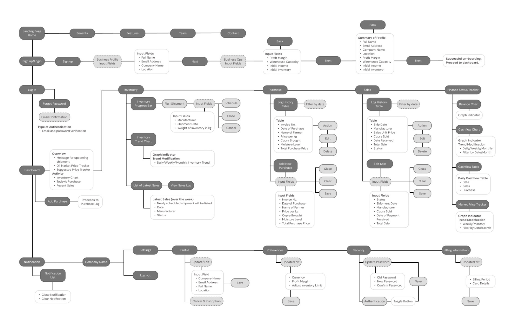
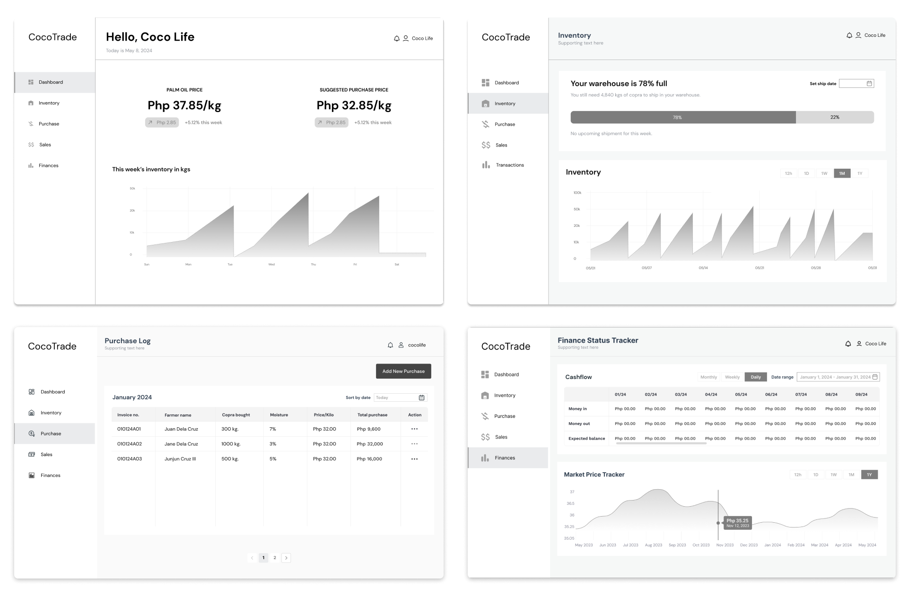
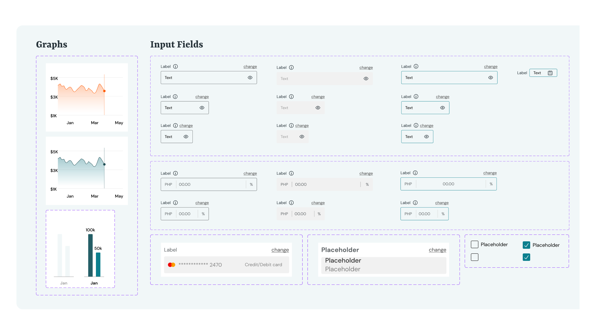
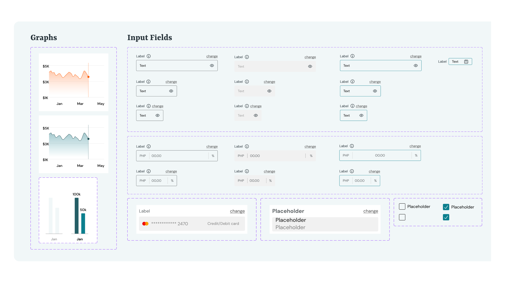
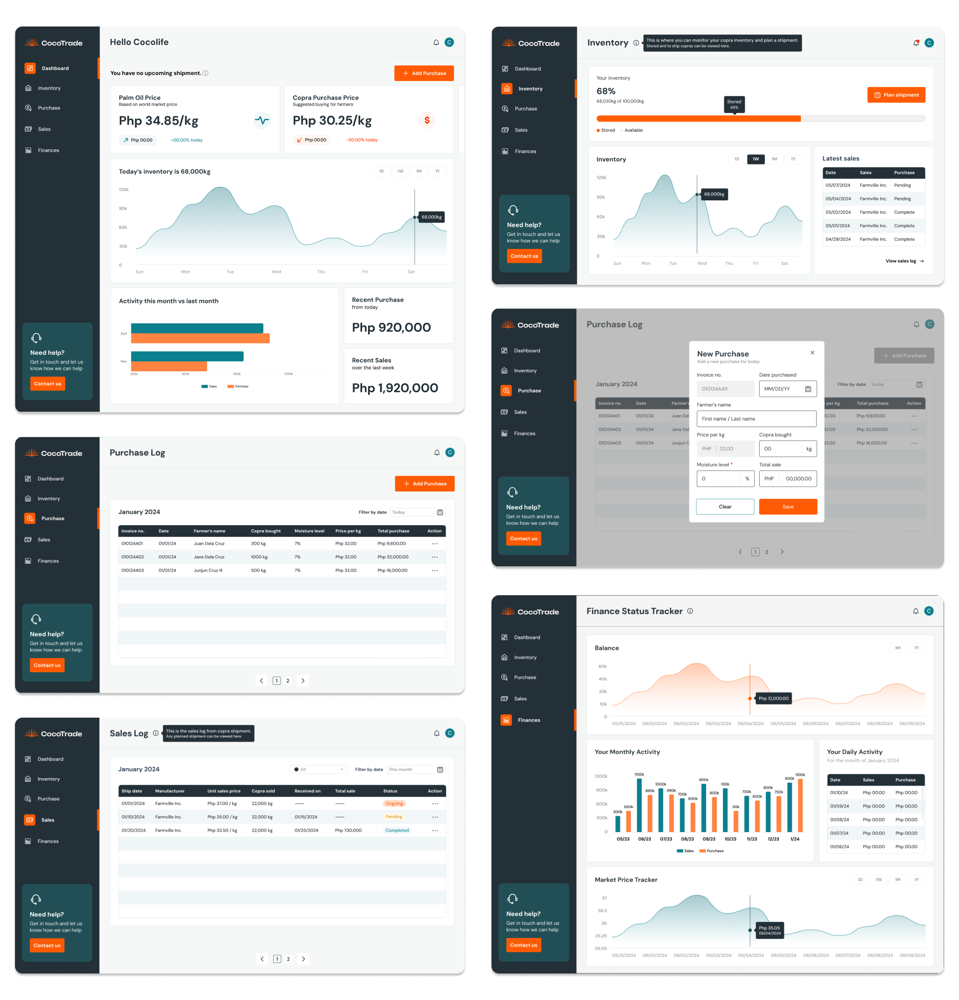

About the project
CocoTrade is a comprehensive B2B platform designed specifically for small to medium-sized copra trading intermediaries, distributors, and processors. This case study details how we developed a solution that addresses the unique challenges faced by copra traders in the supply chain, enhancing efficiency, transparency, and profitability across the ecosystem.
https://cocotrade.net/
PROBLEM STATEMENT
Copra traders in the Philippines, often based in provincial areas, this limitation keeps them reliant on traditional methods like phone calls, paper records, and in-person negotiations.
These outdated practices contribute to operational bottlenecks, impacting price fluctuations, inventory management, and communication between suppliers and buyers. This affects profit margins and scalability. CocoTrade was conceived to modernize these processes through a digital platform, designed specifically to address the unique needs of trading professionals in these regions.
Objectives
- Develop a specialized platform for the operational management of copra trading intermediaries
- Provide market intelligence and pricing analytics to support informed decision-making
- Streamline inventory management, documentation, transaction processes, and shipment tracking, overcoming the limitations of traditional methods
- Implement tools to track copra warehouse stock and monitor inventory levels in real time
- Design an intuitive interface that integrates seamlessly with existing business operations, making it easier for traders to adapt to digital solutions
User persona
USER FLOW
Our design process was driven by firsthand industry knowledge and direct input from copra traders to ensure the platform seamlessly fits their operations.
To address the specific challenges traders face, we:
- Conducted interviews with industry professionals to understand workflows and pain points
- Designed user flow and wireframes to simplify transaction tracking, inventory management, and shipment scheduling
- Built a design system focused on clear data visualization and quick-access tools
- Developed an intuitive dashboard to centralize key trading activities and streamline daily operations
- Conducted usability testing with traders to refine the platform based on real user feedback
Wireframes
CocoTrade is designed to streamline the core operations of copra trading, helping middlemen efficiently manage inventory, transactions, pricing decisions, and financial records.
-
Inventory Management
- Real-time tracking of copra stock levels
- Simplified logging of purchases and sales
- Organized record-keeping for better accuracy
-
Transaction Tracking
- Digital purchase records that mirror traditional manual logging
- Streamlined data entry for efficiency
- Centralized records to reduce logistical errors
- Shipment Scheduling
- Tools to track outgoing and incoming deliveries
- Calendar to plan and schedule shipment based on copra stock
- Automated summaries for easier financial oversight
-
Market Price Tracking
- Live updates on world market prices for copra
- Pricing insights to help intermediaries set competitive rates for farmers
- Manufacturer price comparisons to maximize profit margins
- Financial Management
- Dedicated finance page to track revenue, expenses, and overall profitability
- Clear breakdown of purchase costs and sales income
- Automated summaries to help intermediaries assess business performance
UI KIT
 

Prototype
Mockup

By modernizing essential trading processes while maintaining familiarity for users, CocoTrade enhances efficiency, improves pricing strategies, and provides better financial oversight for copra trading businesses.
My role
With my family’s background in the copra trading industry, I had firsthand insight into the operational challenges copra intermediaries face daily. I contributed heavily to the UX research and design process, ensuring that CocoTrade was built around real user needs. I conducted interviews with traders, mapped out user flows to streamline their workflows, and designed key wireframes for the platform. I was assigned on the Purchase and Sales Log pages, making transaction tracking intuitive while preserving the familiarity of traditional record-keeping. Additionally, I worked on CocoTrade’s branding, ensuring the platform’s visual identity aligned with its purpose—modernizing an outdated system while remaining approachable to traders.
This project deepened my understanding of how digital tools can transform traditional industries without disrupting existing habits. It reinforced the importance of designing with the user’s workflow in mind, balancing innovation with familiarity to drive real adoption.